design research + exhibit + interaction + plant education
reducing plant blindness through botanical exploration and learning
duration
1 year
solo project
mfa thesis, research, ideation, cencept development
the problem
plant blindness.
In 1998, 2 American scientists Wandersee and Schussler coined the term Plant blindness to
describe the tendency of people to ignore the plants in their environment.
our dependance on plants makes this an issue.
In the USA, plants comprise 57% of the federal endangered species list, but plant
conservation receives less than 4% of expenditure.
Research has also shown that students do not prefer to study plant science and consequently the number
of plant science degrees being offered by colleges is on the decline.
These are just some of the effects of plant blindness.
This trend is alarming is that the solution to solving many issues like global warming, the need for new
medicines and food security depends on plants and people with expertise in plant science.
my question
How might we reduce the adverse effects of plant blindness?
research
plant enthusiasts vs. those who ignore plants.
An interesting research conducted via twitter that tried to answer the question: What
differentiates plant scientists and other plant enthusiasts from those who ignore plants?
The answer was an increased exposure to plants from an early age.
Through inspiring teachers, growing up on a farm, or gardening this exposure is one of the main
differences between them and those of us who ignore plants.
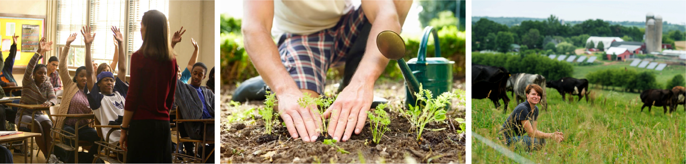
project benchmarking
storytelling, anthropomorphism, participation.
With the above research results in mind I started looking into other projects that have
tried to encourage experiences with plants through participation and exploration outside of formal
learning environments.
The main insights from the projects I looked into was the idea of encouraging participation to generate
interest in a topic, the use of storytelling to engage attention and the use of anthropomorphism which
is the attribution of human characteristics or behaviors to an object to breed empathy for plants.
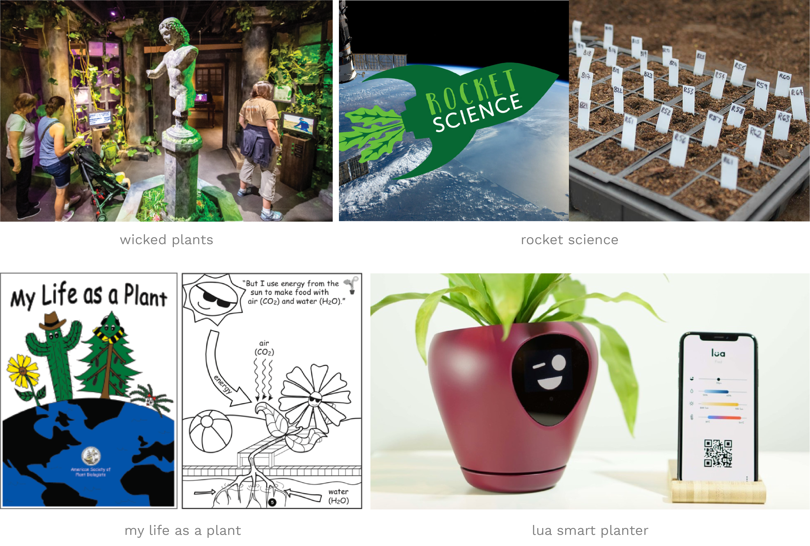
primary research
plant related experiences and increased knowledge.
My primary research helped me realize the need for plant-related experiences that are
easily accessible. I visited the Michigan Science Center, a children’s museum. The STEM section was of
particular interest to me as it focussed on generating interest in science among visitors. What I found
most interesting though was that while Exhibits on human and animal biology were present there was the
lack of anything related to plants in the museum except as decoration for the kids play area. I saw a
similar trend in bookstores as well.
Through conversations with Scott Francisco, the Founder and Director of Pilot Projects Design
Collective, and reading books on plants, I learnt facts about them that I felt would be interesting to
convey to an audience to generate interest. I felt that Knowing this knowledge could help humans treat
plants as living creatures on the same level as animals, which is one of the most significant elements
causing plant blindness.
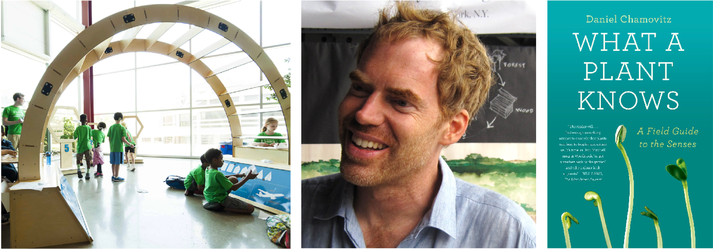
ideation and prototyping
goal.
The goal of my ideation and prototyping stage was to find a way to convey through an
interactive exhibit facts about plants in a way that generates interest in them similar to the way STEM
exhibits do so for science and techology.
I started by creating a number of initial sketches and ideas
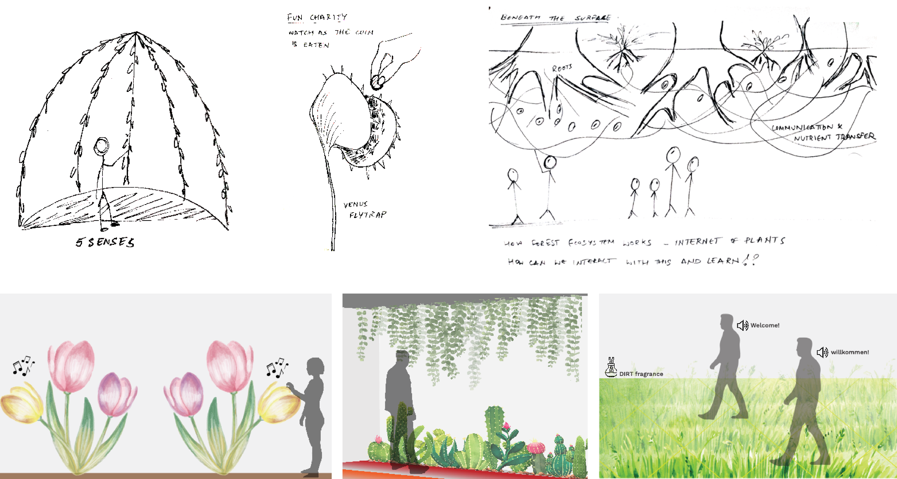
selected concept - first iteration.
I settled on a concept that focussed on the molecular level of plants to convey the way
in which the plants respond their environment in specific situations. It conveys what happens beneath
the seemingly static surface of the plant.
This is the first iteration of my concept. I used the photographs of the molecular structure number of
different plants taken by the Kew Research Center. The visuals would be animated to react to external
stimuli like the presence of bees, and water or attacks by pests.
selected concept - second iteration.
A major concern with the previous iteration was that the visuals were too abstract and
could not convey that the exhibit was about plants. This led to my second iteration in which I had
planned to project the same visuals from the previous iteration onto physical forms of plants using
projection mapping.
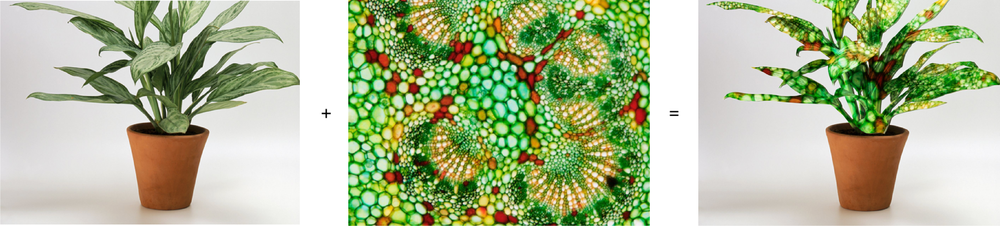
To do this though I would need projectors capable of projection mapping which I did not
have access to. I decided to instead use animated LED strip lights embedded in large physical plant
forms to recreate an effect similar to what I could get through projection mapping.
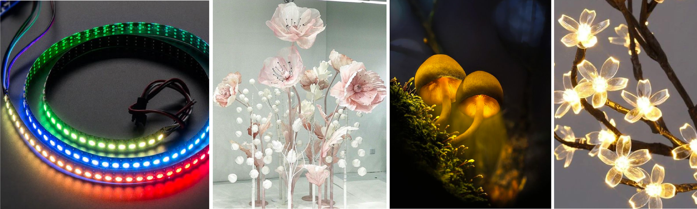
The following is a sketch of what the exhibit would look like followed by the skeleton of
the exhibit I had started to create with the lights and craft wire.
I experimented with LED animations and the forms for the exhibit. Another thing I looked into was the
effects different materials would create when placed over the lights.
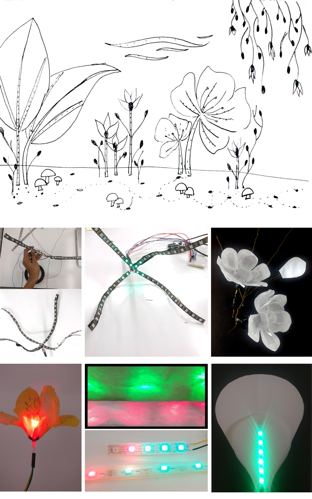
COVID-19 pivot
an experience beyond the exhibit.
With the arrival of COVID-19 I had to pause my work on my exhibit until I found a way to
represent my idea digitally. I took that opportunity at this time to explore the possibility of how
people could encounter plant-related experiences beyond the exhibit. It led me to consider using the
exhibit as a point of entry to a larger and longer experience rather than as a standalone. My focus
during COVID shifted more towards additional experience.
final concept
goals.
How might I ignite curiosity and generate interest in plants by creating opportunities to
encounter experiences for learning and education outside of formal learning environments.
design concept.
it consists of 3 main elements:
an exhibit,
an app,
and the transition between them
the exhibit
choosing a digital style.
I had started exploring how I could recreate the exhibit in a digital format. I explored
a number of styles with the idea being that in a real world scenario I would be working with a larger
team of people which would comprise of illustrators whose style would be a good fit for this project. So
for the purposes of showcasing the concept here I have chosen to use the style of Truf Creatives Flora
Series.
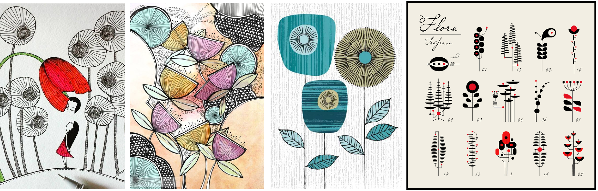
I started developing the exhibit by creating a black and white composition made of
graphics inspired by common garden and house plants. I also explored possibilities for color and style.
Following this, I selected a style to apply to the composition to create the final exhibit design.
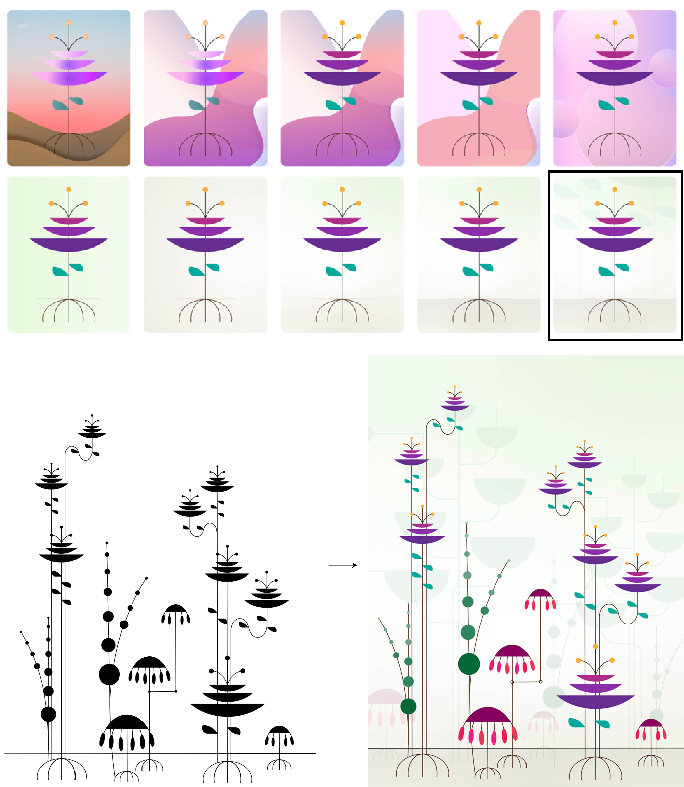
the transition
interacting with the exhibit.
The transition from interacting with the exhibit until the user downloads the app is also
the means with which a user would interact with the exhibit.
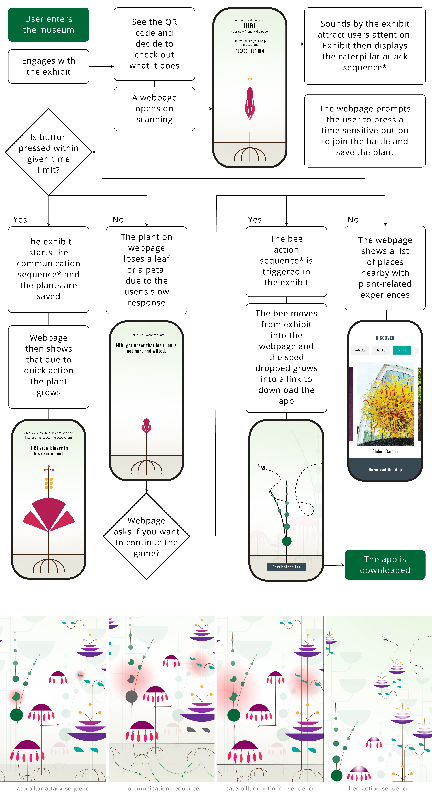
the app
encourages discovery of plant-related experiences.
It is a tool to aid the discovery of new experiences.
I started by creating low fidelity wireframes to define the main features of the app.
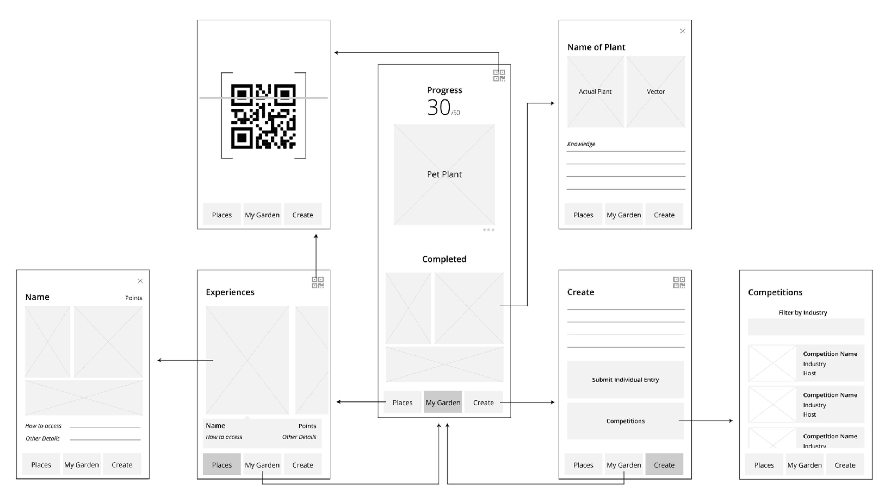
I then added more details and layout to create high fidelity wireframes and fleshed out
the details of the interactions.
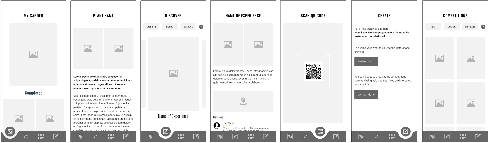
The main feature of the app is the Discover section that helps users get acquainted with
plants through different mediums. Experiences could range from movies, poetry, nature walks, exhibits
and more. The sequence shown here illustrates an example of possibilities the app offers. Users can
choose at every stage, the kind of activities they would like to do. Each activity includes the ability
to record its completion.
Recording experiences contributes to the growth of plants in a digital garden. Helping
these plants grow to maturity allows the user to learn more about the real plants the digital versions
were inspired from. Recording weekly progress on longer projects and sharing experiences to the platform
also contributes to the growth of the garden.
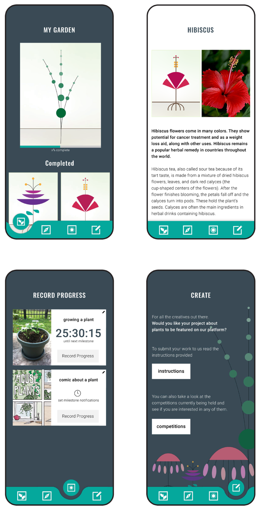
possible futures
the entire experience can result in a reduction in plant blindness.
1. A person might gain the confidence to grow a garden.
2. A museum might realize the value of displaying an array of plant related experiences and also gain an
advantage over competitors who don’t have them.
3. More students might consider plants as a possible career choice due to the increased exposure to
plants from a scientific perspective.
In short people will start to understand and value plants more.
and most importantly people will no longer be as blind to plants as they had been.